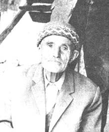

Abdullah ÇAVUÞ (KULA) [Nur Postacýsý]

Bediüzzaman tarafýndan "Risâle-i Nur'un postacýsý mübarek Abdullah" (Kastamonu Lâhikasý, s. 86) þeklinde tavsif edilen Abdullah Çavuþ, Nur hizmetinin mümtaz halkalarýndan biri olarak yerini aldý. Kur'an güneþinden çaðýmýza süzülen nurlarý taþýma ve bunlarý muhtaçlara ulaþtýrma bahtiyarlýðýna erdi. En zor zamanlarda ve baský altýnda bu görevi yaparken bedelini hapishanelerde ödedi. Denizli hapsinde Bediüzzaman Hazretleri ile birlikte idi.Abdullah Çavuþ, 1901 yýlýnda, Bediüzzaman'ýn, "Nurs Köyü olarak biliyorum..." dediði Isparta'ya baðlý Ýslamköy'de dünyaya geldi. Bu köy, Risâle-i Nur'a büyük hizmetlerde bulunan, Bediüzzaman'ýn, "...benim bedelime hastahaneye gitti ve benim yerimde berzah alemine seyahat eyledi, bizi meyusane aðlattýrdý." (Lem'alar, s. 263) dediði Hafýz Ali'nin de yetiþtiði köydür. Bu köyden, iman hizmetinin en meþakkatli döneminde büyük hizmetler ifa eden büyük kahramanlar yetiþmiþtir.
Bediüzzaman'a talebe olduktan sonra Abdullah Çavuþ'un ifa ettiði en önemli vazife, yazýlan nüshalarý istenilen yerlere ulaþtýrmak oldu. Bu vazifeyi büyük bir þevkle ifa ettiði içindir ki, Üstad'ýnýn büyük ilgisine mazhar oldu. Ayrý düþtükleri zamanlarda Bediüzzaman, yanýna gelen talebelerine, "Risâle-i Nur'un postacýsý mübarek Abdullah'ýn ne halde olduðunu"nu sorar, özel selamlarýný yollar, yakýn ilgisini hiçbir zaman esirgemezdi.
Ýman hizmetinde büyük fedakarlýklarla elinden geleni yapan Abdullah Çavuþ, Bediüzzaman ve diðer talebeleri gibi büyük zorluklarla ve sýkýntýlarla karþýlaþtý. Güvenlik güçlerinin takibine uðradýklarýndan posta hizmetlerini büyük bir titizlikle ve ayný zamanda gizlilik içinde yapmak zorunda idi. Bu sebeple, içinde Nurlarýn ve Bediüzzaman'ýn mektuplarýnýn bulunduðu torbayý sýrtýna atarak akþamlarý Ýslamköyü'nden yola çýkardý. Yani, resmi postacýlar gündüz görev yapýp, gece istirahat ederken, o, geceleri bu vazifeyi yapardý. Gerekli köylere uðradýktan sonra, sabaha doðru þafak sökerken Barla'ya Bediüzzaman Hazretlerinin yanýna dönerdi.
Abdullah Çavuþ, sabah namazýný kýldýktan sonra, gecenin yorgunluðunu atmak için istirahate çekilirdi. Mutad olarak, yaptýðý görevini tamamladýktan sonra Barla'ya vardýðý bir günde, aralarýnda köylüsü Hafýz Ali'nin de bulunduðu talebelerin Bediüzzaman'ýn tarifi doðrultusunda Risâle yazdýklarýný gördü. Onlar çalýþýrken kendisi de çay demleyip servis yapmak istedi. Çayý tepsisini alýp daðýtacaðý sýrada, Bediüzzaman Hazretleri tepsiyi elinden alýp bizzat kendi eliyle çalýþan talebelerine çay servisi yaptý. Bu durum karþýsýnda mahcup olduðunu belirten Nur Postacýsý, Bediüzzaman'ýn þu önemli sözlerini nakletmektedir:
"Yazdýðýnýz, hizmetine koþtuðunuz Kur'ân ind-i Ýlahi'de makbul oldu. Melekler sizin fotoðrafýnýzý alýyor. Ben de Kur'ân'ýn bir hizmetkarý olarak, size hizmet etmem lazým." (Son Þahitler ,1. C., s. 310-311).
Her türlü baský ve sürgünlere maruz kalan, her türlü haberleþme imkanlarýndan mahrum býrakýlan, insanlardan tecrit edilen, kendisiyle görüþmeye gidenlere her türlü sýkýntý ve eziyetin reva görüldüðü bir dönemde, bir avuç insanýn tüm bunlarý göðüsleyerek hizmetine koþmalarý, her þeyden önce Bediüzzaman hazretlerini büyük bir sevince ve mutluluða, kader-i Ýlahi'nin þükrünü edaya sevk etmiþtir. Bu fedakar insanlarý her fýrsatta teþvik eden, öven, duasýna ortak eden Bediüzzaman, iltifatlarda bulunurken, söz konusu talebelerini, bazen yakýn akrabalarý olan kiþilerle beraber yad etmiþtir. Onlarý kardeþi Abdülmecid, yeðeni Abdurrahman gibi gördüðünü ve onlarla birlikte ismen duasýna dahil ettiðini dile getirmiþtir. Bazen de hizmetlerini övdüðü talebeleriyle eþdeðer tuttuðunu ifade etmiþtir.
Bediüzzaman çoðu kez bazý hüzün ve mutluluklarý birlikte yaþadý. Bir taraftan kaybettiklerinin, ebedi aleme göç edenlerin hüznünü yaþarken, diðer taraftan hemen yerlerine gönderilen talebelerinin hizmetleriyle mutluluða erdi. Çok sevdiði ve yýllarca acýsýný hissettiðini belirttiði yeðeni Abdurrahman'ýn yokluðunda, büyük bir þevkle kendisine hizmet eden talebelerinin varlýðýyla teselli buldu. Ýþte bunlardan bir tanesi de Abdullah Çavuþtur.
Bediüzzaman, Abdullah Çavuþ'un adýný muhtelif vesilelerle zikretmektedir; "Merhum Lütfi'nin hakikî ve pek ciddi bir vârisi olan Abdullah Çavuþ'un mektubu, onun derece-i sadakat ve ihlasýný ve irtibatýný gösterdi. Her vakit Ýslamköylü Abdullah ile o Abdullah Çavuþ'u duada beraber yâd ediyordum. Elhak, o makama lâyýk olduðunu gösteriyor." (Kastamonu Lâhikasý, s. 100)
Abdullah Çavuþ'un hizmetleri övülürken; "Aras Atabey'de, eskide, Lütfi, Zekâi gibi iki kýymettar þakirtlerin yerlerini boþ býrakmayan, Aras kahramanlarý olan Tahir ve Abdullah Çavuþ'un Risâle-i Nur'a hizmetleri, Aras hakkýnda endiþelerimi tamamen izale etti" (Kastamonu Lâhikasý, s. 58) ifadelerine yer verilmektedir. Bulunduklarý yerde büyük hizmetlere ve bir çok kimsenin imanla kabre girmesine vesile olan Nur talebeleri, bu çalýþmalarýyla daima takdir edildiler. Bediüzzaman, bulunduklarý yeri Nurs köyü gibi yaptýklarýný dile getirdiði talebelerini överken; "Abdullah Çavuþ, kahraman Tahiri ile, Atabeyi, Nurs karyem hükmüne getirmiþler. Ýslamköylü Abdullah, Hafýz Ali (r.h.) zamanýnda Risâle-i Nur'a çok hizmet etmiþ. Onlara umumen selam ediyorum." (Emirdað Lâhikasý, s. 72) demek suretiyle özel ilgisini dile getirmektedir.
Bediüzzaman Hazretleri, hizmetin aksamadan devam etmesi açýsýndan her talebenin kendinden öncekilerin yerine kader tarafýndan istihdam edilmesinden söz etmektedir. Bu anlamda Abdullah Çavuþ için de, "Merhum Hafýz Ali'nin vekil ve varisi ve hizmet-i nuriyede muktedir arkadaþlarý Tahiri ve Abdullah Çavuþun tebrik mektuplarýný aldým." (Emirdað Lâhikasý, s. 155) kaydýný düþmektedir.
Abdullah Çavuþ'la ilgili olarak Risâle-i Nur'da geçen kayýtlardan bir tanesi de Mucizat-ý Ahmediye (asm) Risâlesi yazdýrýlýrken cereyan eden fevkalade duruma þahit olmasý ve altýna düþülen notu "daimi hizmetkarý" (Mektubat, s. 193) olarak tasdik etmesidir; "Evet, biz müsveddeyi yazýyorduk. Üstadýmýz da söylüyordu. Yanýnda hiç kitap yoktu; hiç müracaat da etmiyordu. Birden bire, gayet süratli söylüyordu, biz de yazýyorduk. Ýki üç saatte otuz kýrk, daha fazla sayfa yazýyorduk. Bizim de kanaatimiz geldi ki, bu muvaffakiyet, mu'cizât-ý Nebeviyenin bir kerametidir". Bu olaya þahitlik yapan ismi zikredilen diðer þahýslar; Hafýz Halid, Hafýz Tevfik ve Süleyman Sami'dir.